# Instalación de plotly
install.packages("plotly")
# Instalación de DT
install.packages("DT")10 ggplot2 y plotly - creación declarativa de gráficos interactivos
En este capítulo se presentan los paquetes de graficación ggplot2 y plotly. El primero permite generar gráficos mediante un enfoque declarativo mientras que el segundo les proporciona interactividad.
10.1 Resumen
ggplot2 implementa la gramática de gráficos propuesta por Wilkinson y popularizada por Wickham, un enfoque declarativo en el que un gráfico se construye por capas a partir de un conjunto de datos, mapeos estéticos (aes()), geometrías (geom_*()), escalas, sistemas de coordenadas y temas. Esta separación permite componer visualizaciones complejas a partir de bloques simples y reutilizables.
plotly, por su parte, agrega interactividad (acercamientos, filtrados, tooltips) sobre los mismos gráficos, principalmente mediante la función ggplotly(), que convierte un objeto de ggplot2 en un gráfico interactivo basado en JavaScript. Junto con el paquete DT, que despliega tablas interactivas, conforman una base sólida para la exploración visual de datos en documentos Quarto.
10.2 Trabajo previo
10.2.1 Lecturas
Chang, W. (2018). R graphics cookbook: Practical recipes for visualizing data. O’Reilly. https://r-graphics.org/
Wickham, H., & Grolemund, G. (2017). R for Data Science: Import, Tidy, Transform, Visualize, and Model Data (1.ª ed., capítulo 3). O’Reilly Media. https://r4ds.had.co.nz/
Wickham, H., & Grolemund, G. (2017). R para Ciencia de Datos (1.ª ed., capítulo 3). https://es.r4ds.hadley.nz/
Wickham, H., Çetinkaya-Rundel, M., & Grolemund, G. (2023). R for Data Science (2.ª ed., capítulo 2). O’Reilly Media. https://r4ds.hadley.nz/
Wickham, H., Navarro, D., & Pedersen, T. L. (s. f.). ggplot2: Elegant graphics for data analysis. https://ggplot2-book.org/
10.3 Introducción
R proporciona una gran cantidad de funciones para la elaboración de gráficos estadísticos y otros tipos de visualizaciones. El paquete base de R, por ejemplo, contiene un conjunto básico de funciones muy versátiles, especialmente para gráficos simples de conjuntos de datos relativamente pequeños. Sin embargo, para visualizaciones más avanzadas, puede ser conveniente explorar otras bibliotecas.
ggplot2 es una de las bibliotecas más populares de graficación de R. Implementa el concepto de “gramática de gráficos”, que permite crear visualizaciones complejas a partir de capas y componentes simples. Forma parte de Tidyverse, por lo que se comunica muy bien con los demás paquetes de esta familia, enfocada en conjuntos de datos grandes y en ciencia de datos.
plotly es una biblioteca para crear gráficos interactivos y dinámicos. Contiene capacidades para agregar controles y mecanismos que le permiten al usuario interactuar con los gráficos y realizar operaciones como filtrados, acercamientos y alejamientos, entre otras.
Adicionalmente, el paquete DT permite presentar conjuntos de datos en tablas interactivas en las que se pueden realizar operaciones como ordenamientos, consultas y filtrados.
10.4 Instalación y carga
Los paquetes necesarios pueden instalarse con la función install.packages(). Ya que se usaron en capítulos anteriores, en este punto se asumen instalados los paquetes de Tidyverse.
Una vez instalados, los paquetes pueden cargarse con la función library():
# Carga conjunta de Tidyverse
# (incluye ggplot2, dplyr, readr y otros)
library(tidyverse)
# Carga de plotly
library(plotly)
# Carga de DT
library(DT)
# Carga de scales (para formatear ejes y leyendas en los gráficos)
library(scales)10.5 Conjuntos de datos de ejemplo
10.5.1 Países
Se carga un archivo CSV con los datos de países de Natural Earth unidos con los del indicador de esperanza de vida al nacer en 2022 del Banco Mundial (columna LIFE_EXPECTANCY). También incluye la columna correspondiente al producto interno bruto per cápita (columna GDP_PC).
# Carga de los datos de países
paises <- read_csv(
"https://raw.githubusercontent.com/gf0604-procesamientodatosgeograficos/2026-i/refs/heads/main/datos/natural-earth/paises.csv"
)En el siguiente bloque de código, se utiliza la función datatable() del paquete DT, para desplegar las observaciones de países en una tabla.
# Tabla de datos de paises
paises |> datatable(
options = list(
pageLength = 5,
language = list(url = '//cdn.datatables.net/plug-ins/1.10.11/i18n/Spanish.json')
)
)DT es un “envoltorio” (wrapper) de la biblioteca DataTables de JavaScript, un lenguaje ampliamente utilizado en el desarrollo de páginas web interactivas.
10.6 Paquetes de graficación
Se introducen los paquetes de graficación estadística ggplot2 y plotly. Se utiliza ggplot2 para elaborar los gráficos y plotly para hacerlos interactivos.
10.6.1 ggplot2
ggplot2 es un sistema para la creación declarativa de gráficos, creado por Hadley Wickham en 2005. Está basado en el libro The Grammar of Graphics, de Leland Wilkinson, un esquema general para visualización de datos que descompone un gráfico en sus principales componentes semánticos, tales como capas y geometrías.
10.6.1.1 Principales componentes de un gráfico
De acuerdo con The Grammar of Graphics, los tres principales componentes de un gráfico son:
- Datos (observaciones y variables).
- Conjunto de mapeos de las variables del conjunto de datos a propiedades visuales (aesthetics) del gráfico, tales como posición en el eje x, posición en el eje y, color, tamaño y forma, entre otras.
- Al menos una capa, la cual describe como graficar cada observación. Por lo general, las capas se crean con funciones de geometrías (ej. puntos, líneas, barras).
10.6.1.2 Opciones básicas
ggplot2 implementa un gráfico estadístico por medio de la función ggplot(), cuya sintaxis básica puede resumirse de la siguiente forma:
<DATOS> |>
ggplot(aes(<MAPEOS>)) +
<FUNCION_GEOMETRIA>()<DATOS> es usualmente un data frame o un tibble (versión moderna de un data frame, implementada en Tidyverse). El llamado a ggplot() crea un sistema de coordenadas (i.e. un “canvas”), al cual se le agregan capas.
La función aes() realiza los mapeos (<MAPEOS>) de las variables del conjunto de datos a las propiedades visuales del gráfico. Las capas se crean con funciones de geometrías (<FUNCION_GEOMETRIA>) como geom_point(), geom_bar() o geom_histogram(), entre muchas otras. Note el uso del operador + para agregar las capas al gráfico.
Como ejemplo, seguidamente se crea un gráfico de dispersión (scatterplot). Este tipo de gráfico despliega los valores de dos variables numéricas, como puntos en un sistema de coordenadas. El valor de una variable se despliega en el eje X y el de la otra variable en el eje Y. Variables adicionales pueden ser mostradas mediante atributos de los puntos, tales como su tamaño, color o forma.
El siguiente gráfico de dispersión muestra la variable producto interno bruto (PIB) per cápita (GDP_PC) en el eje X, y la variable esperanza de vida al nacer (LIFE_EXPECTANCY) en el eje Y.
# Gráfico de dispersión de PIB per cápita vs esperanza de vida al nacer
paises |>
ggplot(aes(x = GDP_PC, y = LIFE_EXPECTANCY)) +
geom_point() +
scale_x_continuous(labels = label_comma(), limits = c(0, NA))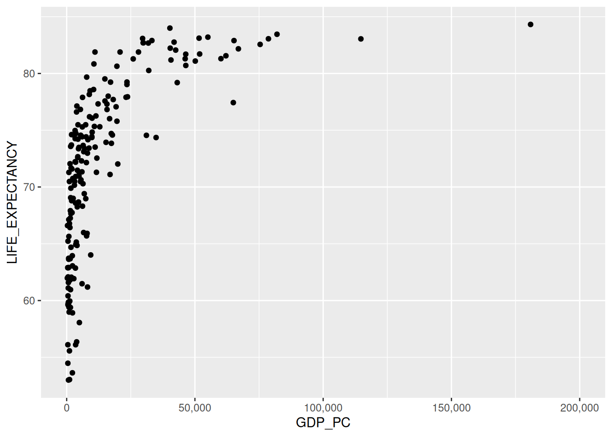
La función scale_x_continuous() permite usar comas como separadores de miles y establecer los límites del eje X. También evita la notación científica.
El gráfico muestra una relación positiva entre el PIB per cápita y la esperanza de vida al nacer. En otras palabras, mientras mayor es el PIB per cápita de un país, mayor es la esperanza de vida al nacer de sus habitantes.
10.6.1.3 Variables adicionales
Se pueden incluir variables adicionales en el gráfico mediante su mapeo a otras propiedades visuales. En el siguiente bloque de código, la variable correspondiente al continente (CONTINENT), se mapea a la propiedad color.
# Gráfico de dispersión de PIB per cápita vs esperanza de vida al nacer
# coloreado por continente
paises |>
ggplot(aes(x = GDP_PC, y = LIFE_EXPECTANCY, color = CONTINENT)) +
geom_point() +
scale_x_continuous(labels = label_comma(), limits = c(0, NA))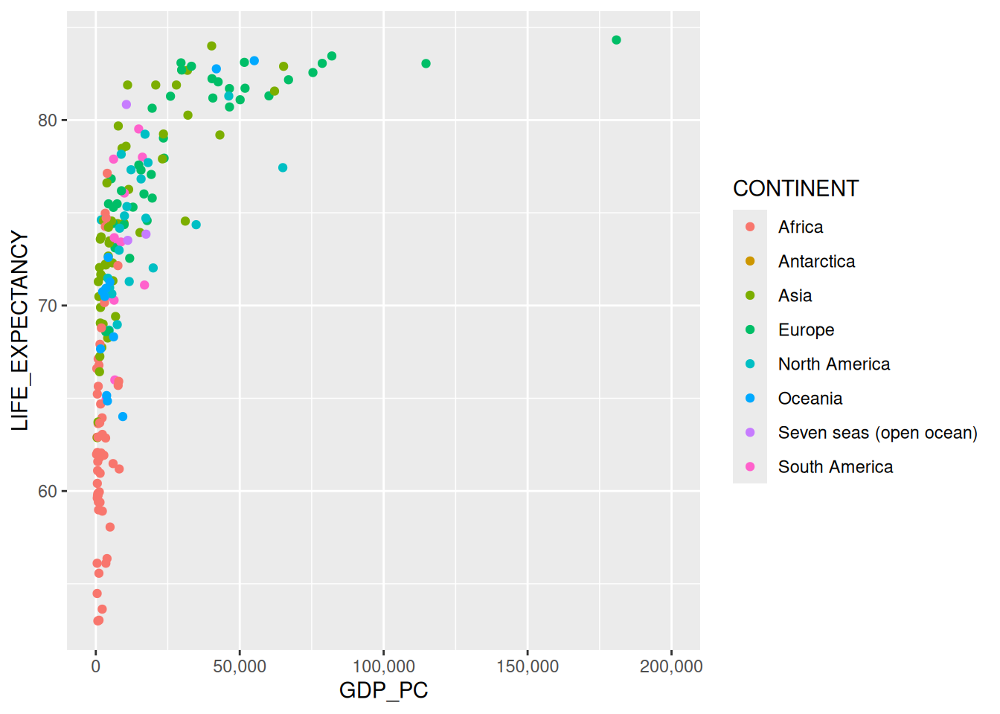
El siguiente bloque de código mapea la variable de la población estimada (POP_EST) con la propiedad visual tamaño (size).
# Gráfico de dispersión de PIB per cápita vs esperanza de vida al nacer
# con tamaño de puntos correspondiente a la población
paises |>
ggplot(aes(x = GDP_PC, y = LIFE_EXPECTANCY, color = CONTINENT, size = POP_EST)) +
geom_point() +
scale_x_continuous(labels = label_comma(), limits = c(0, NA)) +
scale_size_continuous(labels = label_comma())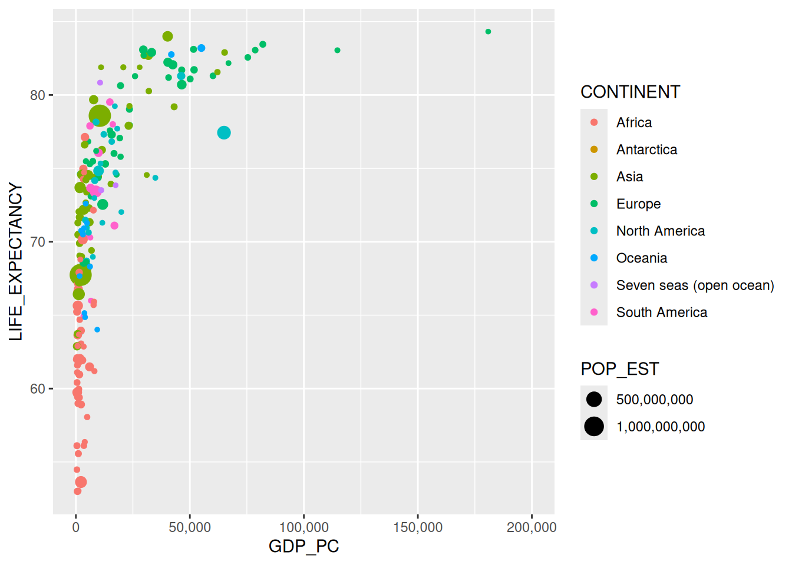
10.6.1.4 Capas adicionales
Un mismo gráfico puede contener múltiples capas, cada una con su propia función de geometría. El siguiente bloque de código agrega una capa con la función geom_smooth(), la cual muestra una curva de tendencia.
# Gráfico de dispersión de PIB per cápita vs esperanza de vida al nacer
# + curva de tendencia
paises |>
ggplot(aes(x = GDP_PC, y = LIFE_EXPECTANCY)) +
geom_point() +
geom_smooth(method = 'lm') +
scale_x_continuous(labels = label_comma(), limits = c(0, NA))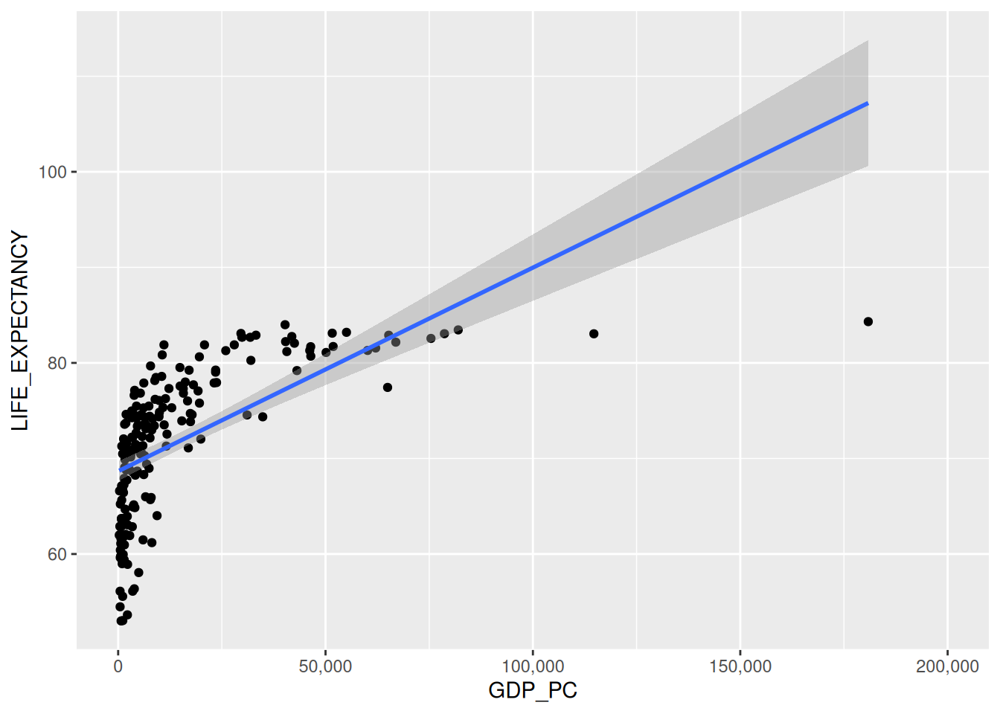
Ejercicios
1. Revise la documentación de geom_smooth() para agregar otros tipos de curvas de tendencia al gráfico.
10.6.1.5 Títulos, etiquetas, estilos y colores
10.6.1.5.1 Titulos, subtítulos y etiquetas
ggplot2 incluye las funciones ggtitle(), xlab(), ylab() y labs(), las cuales permiten agregar títulos, subtítulos, etiquetas en los ejes y de otros tipos a un gráfico.
Algunas de las opciones que ofrecen estas funciones se ilustran en el siguiente gráfico.
# Gráfico de dispersión de PIB per cápita vs esperanza de vida al nacer
# + curva de tendencia
paises |>
ggplot(aes(x = GDP_PC, y = LIFE_EXPECTANCY, color = CONTINENT)) +
geom_point() +
scale_x_continuous(labels = label_comma(), limits = c(0, NA)) +
ggtitle("PIB per cápita vs esperanza de vida al nacer") +
xlab("PIB per cápita (USD)") +
ylab("Esperanza de vida (años)") +
labs(caption = "Fuentes: Natural Earth y Banco Mundial",
color = "Continente")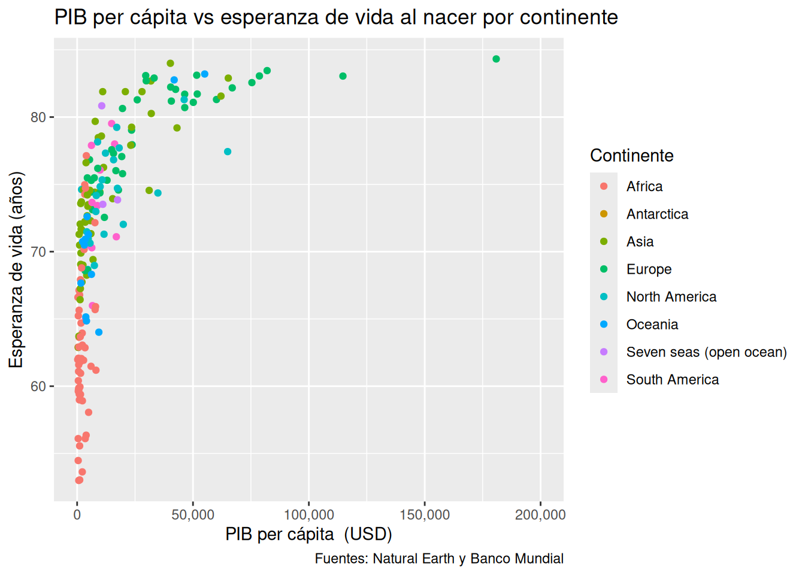
El títulos y las etiquetas de los ejes se pueden agregar también mediante argumentos de labs().
10.6.1.5.2 Estilos
ggplot2 incluye un conjunto de estilos (themes) que pueden ayudar a mejorar el aspecto visual de los gráficos.
# Gráfico de dispersión de PIB per cápita vs esperanza de vida al nacer
# coloreado por continente
# + curva de tendencia
paises |>
ggplot(aes(x = GDP_PC, y = LIFE_EXPECTANCY, color = CONTINENT)) +
geom_point() +
scale_x_continuous(labels = label_comma(), limits = c(0, NA)) +
ggtitle("PIB per cápita vs esperanza de vida al nacer") +
xlab("PIB per cápita (USD)") +
ylab("Esperanza de vida (años)") +
labs(caption = "Fuentes: Natural Earth y Banco Mundial",
color = "Continente") +
theme_bw() # tema de ggplot2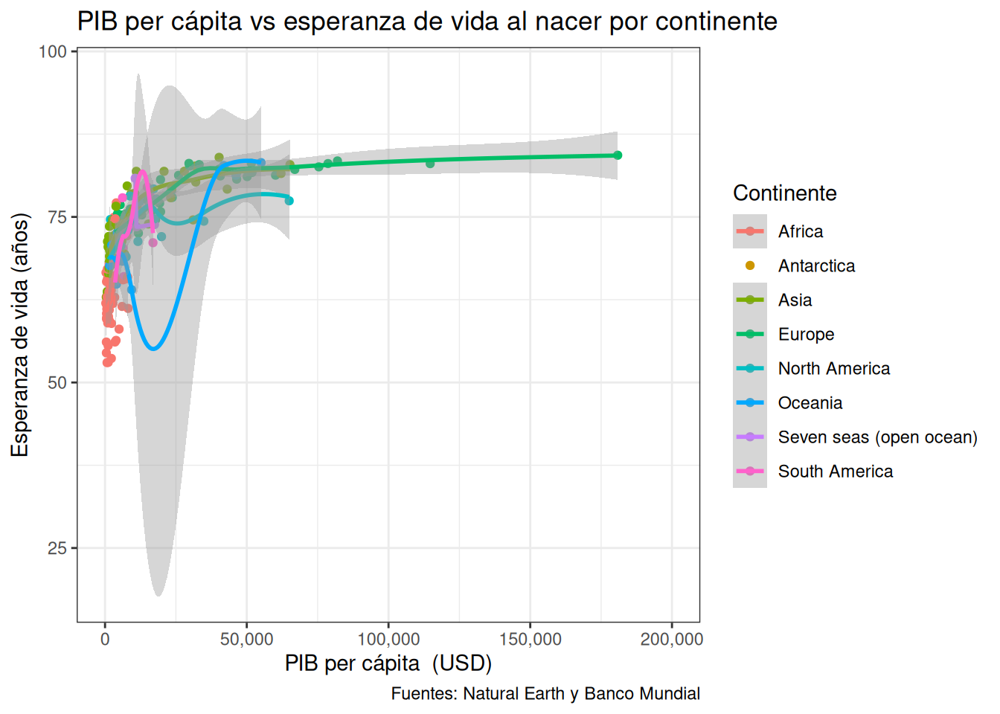
Ejercicios
1. Revise la documentación de estilos de ggplot2 y pruebe diferentes opciones en el gráfico anterior, sustituyendo la última línea por otro theme_*() (por ejemplo, theme_minimal(), theme_classic() o theme_void()).
Existen paquetes que ofrecen estilos adicionales como, por ejemplo, ggthemes.
# Instalación de ggthemes
install.packages("ggthemes")# Carga de ggthemes
library(ggthemes)# Gráfico de dispersión de PIB per cápita vs esperanza de vida al nacer
# coloreado por continente
# + curva de tendencia
paises |>
ggplot(aes(x = GDP_PC, y = LIFE_EXPECTANCY, color = CONTINENT)) +
geom_point() +
scale_x_continuous(labels = label_comma(), limits = c(0, NA)) +
ggtitle("PIB per cápita vs esperanza de vida al nacer") +
xlab("PIB per cápita (USD)") +
ylab("Esperanza de vida (años)") +
labs(caption = "Fuentes: Natural Earth y Banco Mundial",
color = "Continente") +
theme_economist() # estilo de ggthemes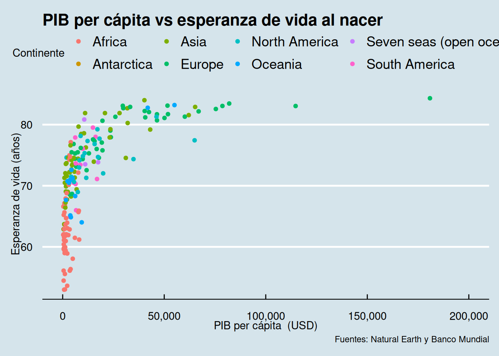
10.6.1.5.3 Colores
ggplot2 incluye múltiples funciones para escalas de colores, entre las que pueden mencionarse:
- scale_color_brewer(): para escalas de colores secuenciales, divergentes y cualitativas de ColorBrewer.
- scale_color_viridis_d(): para escalas viridis, diseñadas para mejorar la legibilidad de gráficos para lectores con formas comunes de daltonismo y discapacidades relacionadas con la percepción de colores.
- scale_color_manual(): para especificar directamente los colores a utilizar.
El siguiente bloque de código genera un gráfico de dispersión para los datos de países. Muestra el PIB per cápita (GDP_PC) en el eje X y la esperanza de vida (LIFE_EXPECTANCY) en el eje Y. La variable correspondiente al continente (CONTINENT) se muestra mediante el color de los puntos, de acuerdo con una escala cualitativa de ColorBrewer (apropiada para variables categóricas).
# Gráfico de dispersión de PIB per cápita vs esperanza de vida al nacer
# coloreado por continente
paises |>
ggplot(aes(x = GDP_PC, y = LIFE_EXPECTANCY, color = CONTINENT)) +
geom_point() +
scale_x_continuous(labels = label_comma(), limits = c(0, NA)) +
ggtitle("PIB per cápita vs esperanza de vida al nacer") +
xlab("PIB per cápita (USD)") +
ylab("Esperanza de vida (años)") +
labs(caption = "Fuentes: Natural Earth y Banco Mundial",
color = "Continente") +
scale_colour_brewer(palette = "Set1") + # escala de colores cualitativa
theme_minimal() # estilo de ggplot2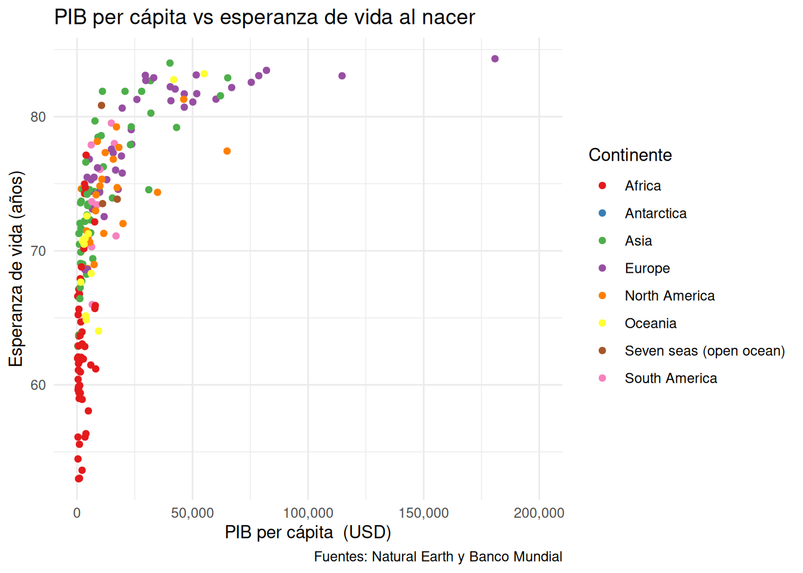
Cuando la variable mapeada al color es numérica, lo apropiado es una escala secuencial, que representa la magnitud mediante una variación gradual de claro a oscuro. La función scale_color_distiller() interpola los colores de una paleta de ColorBrewer para variables continuas.
En el siguiente bloque, se mapea la población estimada (POP_EST) al color. Debido a que la población tiene una distribución muy sesgada (pocos países muy poblados y muchos con poblaciones pequeñas), se aplica una transformación logarítmica al eje del color con el argumento trans = "log10".
# Gráfico de dispersión de PIB per cápita vs esperanza de vida al nacer
# coloreado por población estimada (escala logarítmica)
paises |>
ggplot(aes(x = GDP_PC, y = LIFE_EXPECTANCY, color = POP_EST)) +
geom_point() +
scale_x_continuous(labels = label_comma(), limits = c(0, NA)) +
ggtitle("PIB per cápita vs esperanza de vida al nacer") +
xlab("PIB per cápita (USD)") +
ylab("Esperanza de vida (años)") +
labs(caption = "Fuentes: Natural Earth y Banco Mundial",
color = "Población estimada") +
scale_color_distiller(palette = "YlOrBr",
direction = 1,
trans = "log10",
labels = label_comma()) + # escala secuencial continua
theme_minimal() # estilo de ggplot2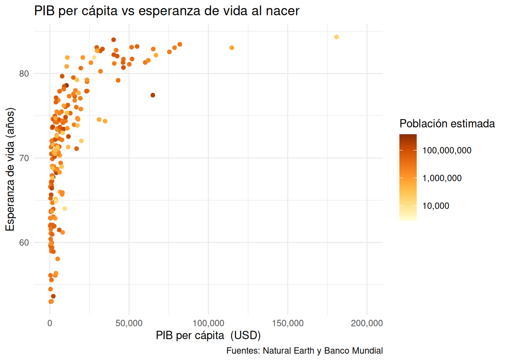
Para más información sobre etiquetas, estilos, colores y otros temas relacionados en ggplot2, se recomienda leer ggplot2: Elegant Graphics for Data Analysis - Themes.
10.6.2 plotly
plotly R es una biblioteca para gráficos interactivos que forma parte del grupo de bibliotecas de graficación de Plotly, el cual también incluye bibliotecas para otros lenguajes como Python, Julia, F# y MATLAB. Plotly fue originalmente escrita en JavaScript, por lo que es particularmente adecuada para gráficos interactivos en la Web.
plotly implementa la función ggplotly(), la cual convierte graficos de ggplot2 a plotly, haciéndolos interactivos.
El siguiente bloque de código muestra un gráfico generado con ggplot2 y convertido a plotly con la función ggplotly().
# Gráfico de dispersión de PIB per cápita vs esperanza de vida al nacer
grafico_ggplot2 <-
paises |>
ggplot(aes(x = GDP_PC, y = LIFE_EXPECTANCY, color = CONTINENT)) +
geom_point(aes(
# datos que se muestran al colocar el ratón sobre un punto
text = paste0(
"País: ", NAME, "\n",
"PIB per cápita: ", number(GDP_PC, accuracy = 1, prefix = "$", big.mark = ","), "\n",
"Esperanza de vida: ", number(LIFE_EXPECTANCY, accuracy = 0.1, suffix = " años")
)
)) +
scale_x_continuous(labels = label_comma(), limits = c(0, NA)) +
scale_colour_brewer(palette = "Set1") +
ggtitle("PIB per cápita vs esperanza de vida al nacer") +
xlab("PIB per cápita (USD)") +
ylab("Esperanza de vida (años)") +
labs(caption = "Fuentes: Natural Earth y Banco Mundial",
color = "Continente") +
theme_minimal() # estilo de ggplot2
# Gráfico plotly
ggplotly(grafico_ggplot2, tooltip = "text") |>
config(locale = 'es') # para mostrar los controles en español10.6.2.1 Personalización de plotly
El objeto que produce ggplotly() puede ajustarse con las funciones config() (controles de la barra de herramientas) y layout() (apariencia y comportamiento general). Algunas opciones útiles de config():
locale: idioma de los controles (ya se utilizó en el ejemplo anterior).displaylogo = FALSE: oculta el logotipo de Plotly de la barra de herramientas.modeBarButtonsToRemove: elimina botones específicos (p. ej. selección por área, selección con lazo).toImageButtonOptions: configura el botón que exporta el gráfico como imagen (formato, nombre del archivo, dimensiones).
El siguiente bloque aplica estas opciones al mismo gráfico de dispersión.
# Gráfico plotly con la barra de herramientas personalizada
ggplotly(grafico_ggplot2, tooltip = "text") |>
config(
locale = "es",
displaylogo = FALSE,
modeBarButtonsToRemove = c("select2d", "lasso2d"),
toImageButtonOptions = list(
format = "png",
filename = "pib-vs-esperanza-vida",
width = 1000,
height = 600
)
)10.7 Otros tipos de gráficos
Hasta ahora se utilizaron gráficos de dispersión para presentar la sintaxis de ggplot2 y plotly. En esta sección se ejemplifican otros tipos de gráficos (histogramas, gráficos de pastel y gráficos de barras), los cuales se construyen con ggplot2 y luego se convierten a plotly.
Para algunos de estos —especialmente los de barras— es útil ampliar la sintaxis básica con tres elementos adicionales: la transformación estadística (stat), el posicionamiento de las geometrías (position) y el sistema de coordenadas (coord_*):
<DATOS> |>
ggplot(aes(<MAPEOS>)) +
<FUNCION_GEOMETRIA>(
stat = <ESTADISTICA>,
position = <POSICION>
) +
<FUNCION_COORDENADAS>Estas opciones se ilustran más adelante, principalmente en los gráficos de barras (transformaciones estadísticas, barras apiladas y agrupadas).
10.7.1 Histogramas
Un histograma es una representación gráfica de la distribución de una variable numérica en forma de barras (en este caso, llamadas en inglés bins). La longitud de cada barra representa la frecuencia de un rango de valores de la variable. La graficación de la distribución de las variables es, frecuentemente, una de las primeras tareas que se realiza cuando se explora un conjunto de datos.
En ggplot2, los histogramas se implementan con la función geom_histogram().
El siguiente bloque de código muestra, mediante un histograma, la distribución del producto interno bruto (PIB) per cápita entre los países incluidos en el conjunto de datos.
# Histograma ggplot2 de distribución del PIB per cápita
histograma_ggplot2 <-
paises |>
ggplot(aes(x = GDP_PC)) +
geom_histogram(
aes(
text = paste0(
"PIB per cápita (valor medio del rango): ",
number(after_stat(x), accuracy = 1, prefix = "$", big.mark = ","),
"\n",
"Frecuencia: ", after_stat(count)
)
),
bins = 10
) +
scale_x_continuous(labels = label_comma(), limits = c(0, NA)) +
ggtitle("Distribución del PIB per cápita") +
xlab("PIB per cápita ($ EE.UU.)") +
ylab("Frecuencia") +
labs(subtitle = paste0("Datos de ", nrow(paises), " países"),
caption = "Fuentes: Natural Earth y Banco Mundial") +
theme_minimal()
# Histograma plotly
ggplotly(histograma_ggplot2, tooltip = "text") |>
config(locale = 'es')El argumento bins define la cantidad de barras (en el ejemplo anterior, 10) y ggplot2 calcula automáticamente el ancho de cada una. Como alternativa, el argumento binwidth fija directamente el ancho de cada barra en las unidades de la variable y ggplot2 calcula la cantidad de barras. La elección de uno u otro afecta la apariencia del histograma: un binwidth pequeño revela más detalle de la distribución, pero puede introducir ruido; uno grande resalta el patrón general a costa de detalle.
El siguiente histograma reemplaza bins = 10 por binwidth = 5000 (en dólares), lo que produce barras más estrechas y un perfil más fino de la distribución.
# Histograma ggplot2 con ancho de barra fijo
histograma_ggplot2 <-
paises |>
ggplot(aes(x = GDP_PC)) +
geom_histogram(
aes(
text = paste0(
"PIB per cápita (valor medio del rango): ",
number(after_stat(x), accuracy = 1, prefix = "$", big.mark = ","),
"\n",
"Frecuencia: ", after_stat(count)
)
),
binwidth = 5000
) +
scale_x_continuous(labels = label_comma(), limits = c(0, NA)) +
ggtitle("Distribución del PIB per cápita (binwidth = $5,000)") +
xlab("PIB per cápita ($ EE.UU.)") +
ylab("Frecuencia") +
labs(subtitle = paste0("Datos de ", nrow(paises), " países"),
caption = "Fuentes: Natural Earth y Banco Mundial") +
theme_minimal()
# Histograma plotly
ggplotly(histograma_ggplot2, tooltip = "text") |>
config(locale = 'es')10.7.2 Gráficos de pastel
Un gráfico de pastel representa porcentajes y porciones en secciones (slices) de un círculo. Son muy populares, pero también criticados debido a la dificultad del cerebro humano de comparar áreas de sectores circulares, por lo que algunos expertos recomiendan sustituirlos por otros tipos de gráficos como, por ejemplo, gráficos de barras.
En ggplot2, los gráficos de pastel se implementan con la función de geometría geom_bar(stat = "identity", width = 1) y la función coord_polar(), la cual implementa un sistema de coordenadas polares.
El siguiente gráfico de pastel muestra la población mundial por región de la Organización de Naciones Unidas (ONU).
# Población total y porcentaje por región de la ONU
poblacion_por_region <-
paises |>
group_by(REGION_UN) |>
summarize(POP_TOTAL = sum(POP_EST)) |>
mutate(POP_PCT = POP_TOTAL / sum(POP_TOTAL) * 100)
# Paleta de colores compartida entre el gráfico ggplot2 y el plotly
# (corresponde a la paleta cualitativa por defecto de plotly)
colores_pastel <- c(
"#636EFA", "#EF553B", "#00CC96", "#AB63FA", "#FFA15A",
"#19D3F3", "#FF6692", "#B6E880", "#FF97FF", "#FECB52"
)
# Gráfico de pastel
grafico_pastel_ggplot2 <-
poblacion_por_region |>
ggplot(aes(x = "", y = POP_TOTAL, fill = REGION_UN)) +
geom_bar(width = 1, stat = "identity") +
coord_polar(theta = "y") +
geom_text(
aes(label = number(POP_PCT, accuracy = 0.1, suffix = "%")),
position = position_stack(vjust = 0.6) # para ajustar la posición del texto en cada porción
) +
scale_fill_manual(values = colores_pastel) +
ggtitle("Población mundial por región de la ONU") +
labs(fill = "Región de la ONU", caption = "Fuente: Natural Earth") +
theme_void()
# Despliegue del gráfico
grafico_pastel_ggplot2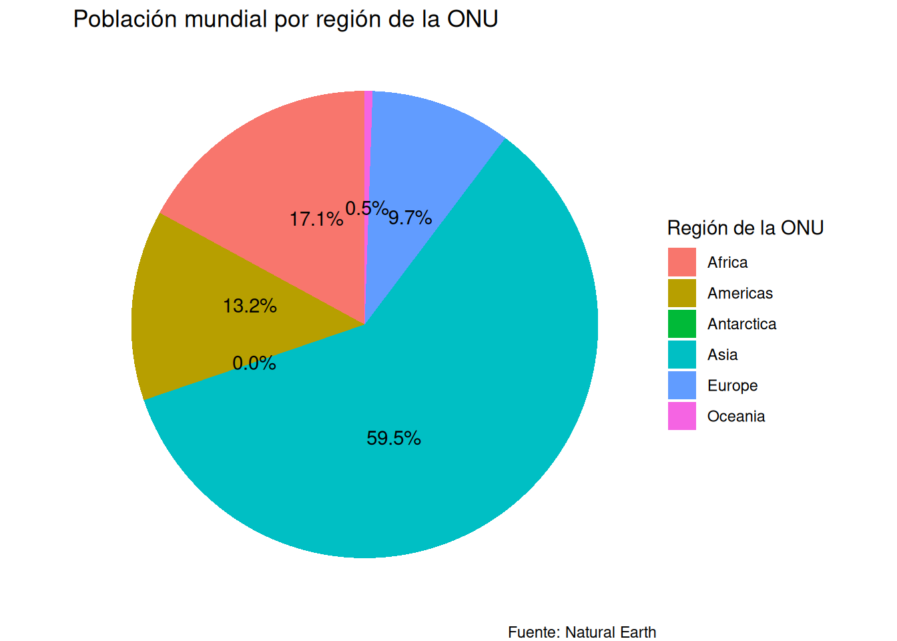
La función ggplotly() no admite el sistema de coordenadas polares (coord_polar()) que utiliza ggplot2 para construir el gráfico de pastel, por lo que no es posible convertir directamente el gráfico anterior a plotly. Sin embargo, plotly dispone de una API propia (más allá de ggplotly()) que permite construir gráficos de pastel interactivos con la función plot_ly() y el argumento type = "pie".
# Gráfico de pastel interactivo con la API nativa de plotly
plot_ly(
data = poblacion_por_region,
labels = ~REGION_UN,
values = ~POP_TOTAL,
type = "pie",
textinfo = "label+percent",
hoverinfo = "label+value+percent",
marker = list(colors = colores_pastel)
) |>
layout(title = "Población mundial por región de la ONU") |>
config(locale = "es")10.7.3 Gráficos de barras
Un gráfico de barras se compone de barras rectangulares con longitud proporcional a estadísticas (ej. frecuencias, promedios, mínimos, máximos) asociadas a una variable categórica o discreta. Las barras pueden ser horizontales o verticales y se recomienda que estén ordenadas según su longitud, a menos que exista un orden inherente a la variable (ej. el orden de los días de la semana). Es uno de los tipos de gráficos estadísticos más antiguos y comunes y tiene la ventaja de ser muy fácil de comprender.
En ggplot2, los gráficos de barras se implementan con las funciones geom_bar(), que se utiliza en gráficos que requieren transformaciones estadísticas, y geom_col(), para gráficos que no requieren estas transformaciones.
10.7.3.1 Barras con transformaciones estadísticas
Los gráficos de barras y otros tipos de gráficos (ej. histogramas, gráficos de caja, líneas de ajuste) pueden requerir de alguna transformación estadística antes de presentar la información. Esta transformación estadística puede ser un conteo, el cálculo de un promedio, un mínimo o un máximo, entre otras opciones.
Por ejemplo, el siguiente gráfico muestra la cantidad de países por región de la ONU presentes en el conjunto de datos de países. Nótese que este conteo no está presente en ninguna de las variables del conjunto de datos.
# Gráfico de barras con conteo de países por región de la ONU
grafico_barras_ggplot2 <-
paises |>
ggplot(aes(x = fct_infreq(REGION_UN))) +
geom_bar(
aes(
text = paste0(
"Cantidad de países: ", after_stat(count)
)
)
) +
ggtitle("Cantidad de países por región de la ONU") +
xlab("Región de la ONU") +
ylab("Cantidad de países") +
labs(caption = "Fuente: Natural Earth") +
theme_minimal()
# Gráfico de barras plotly
ggplotly(grafico_barras_ggplot2, tooltip = "text") |>
config(locale = 'es')La función fct_infreq() del paquete forcats se usa para ordenar las barras. Si se prefiere el orden inverso, puede utilizarse la función fct_rev() (ej. fct_rev(fct_infreq(REGION_UN))). Para más información sobre el ordenamiento en gráficos, se recomienda consultar FAQ: Reordering - ggplot2.
El cálculo de la cantidad de países por continente o el de la cantidad de diamantes por corte, son ejemplos de transformaciones estadísticas. La Figura 10.1 muestra como se realiza este proceso para el gráfico anterior.
Las barras pueden mostrar otras transformaciones estadísticas a través del argumento stat de geom_bar() (por ejemplo, stat = "summary" con fun = "mean" para graficar promedios). Sin embargo, suele ser más práctico pre-computar el resumen con summarize() y luego graficarlo con geom_col(), lo que además facilita el ordenamiento de las barras con reorder().
Por ejemplo, para mostrar el promedio de esperanza de vida (LIFE_EXPECTANCY) por región de la ONU, primero se calcula el promedio:
# Cálculo del promedio de esperanza de vida por región
promedio_esperanza_vida_por_region <-
paises |>
group_by(REGION_UN) |>
summarize(LIFE_EXPECTANCY_MEAN = mean(LIFE_EXPECTANCY, na.rm = TRUE))
# Despliegue por orden descendente del promedio de esperanza de vida
promedio_esperanza_vida_por_region |>
arrange(desc(LIFE_EXPECTANCY_MEAN))# A tibble: 6 × 2
REGION_UN LIFE_EXPECTANCY_MEAN
<chr> <dbl>
1 Europe 78.6
2 Asia 74.5
3 Americas 73.5
4 Oceania 71.0
5 Africa 63.1
6 Antarctica NaN Luego se dibuja el gráfico con geom_col() y se ordenan las barras con reorder().
# Gráfico de barras con promedio de esperanza de vida
# para cada región de la ONU
grafico_barras_ggplot2 <-
promedio_esperanza_vida_por_region |>
ggplot(aes(x = reorder(REGION_UN,-LIFE_EXPECTANCY_MEAN), y = LIFE_EXPECTANCY_MEAN)) +
geom_col(
aes(
text = paste0(
"Promedio de esperanza de vida: ", number(after_stat(y), accuracy = 0.1, suffix = " años")
)
)
) +
ggtitle("Promedio de esperanza de vida por región de la ONU") +
xlab("Región de la ONU") +
ylab("Promedio de esperanza de vida") +
labs(caption = "Fuente: Natural Earth") +
theme_minimal()
# Gráfico de barras plotly
ggplotly(grafico_barras_ggplot2, tooltip = "text") |>
config(locale = 'es')El uso de geom_col() se ampliará en la sección siguiente.
10.7.3.2 Barras sin transformaciones estadísticas
En algunos conjuntos de datos, el valor que se quiere representar en la longitud de las barras ya está presente como una variable en el conjunto de datos, por lo que no es necesario que ggplot2 realice una transformación estadística. En estos casos, se utiliza la función geom_col().
Nota: para dibujar barras sin transformaciones estadísticas, tambien es posible utilizar la función geom_bar(). En este caso, al argumento stat se le asigna el valor "identity" y al argumento y de aes() la variable que contiene el valor que quiere mostrarse en las barras.
El siguiente gráfico de barras muestra la población de los países de América. Nótese que este valor se puede tomar directamente de la variable POP_EST, después de realizar los filtros correspondientes.
# Gráfico de barras con población de países
# de América
grafico_barras_ggplot2 <-
paises |>
filter(REGION_UN == "Americas") |>
ggplot(aes(x = reorder(ADM0_ISO, POP_EST), y = POP_EST/1000000)) +
geom_col(
aes(
text = paste0(
"País: ", NAME, "\n",
"Población (millones de habitantes): ", number(POP_EST/1000000, accuracy = 0.1)
)
)
) +
scale_y_continuous(expand = expansion(mult = c(0.2, 0.2))) + # agrega un 20% de espacio al inicio y al final del eje y
coord_flip() + # para mostrar barras horizontales
ggtitle("Población de países de América") +
xlab("País") +
ylab("Población (millones de habitantes)") +
labs(caption = "Fuente: Natural Earth") +
theme_minimal()
# Gráfico de barras plotly
ggplotly(grafico_barras_ggplot2, tooltip = "text") |>
config(locale = 'es')10.7.3.3 Barras apiladas
Al usar el argumento fill de aes(), las barras de un gráfico pueden dividirse de acuerdo con una variable adicional, produciendo el efecto de barras apiladas (i.e. unas sobre otras).
En el siguiente bloque de código, se genera un gráfico de barras apiladas que, para el conjunto de datos de países, muestra las cantidades de países por región de la ONU (REGION_UN) subdivididas por nivel de economía (ECONOMY). Para que los tooltips muestren simultáneamente la región, el nivel de economía y la cantidad, los conteos se pre-calculan con count() y se grafican con geom_col(). Los argumentos de posicionamiento (position) que se ilustran a continuación funcionan tanto con geom_bar() como con geom_col().
# Cantidad de países por región y nivel de economía
paises_por_region_economia <-
paises |>
count(REGION_UN, ECONOMY, name = "n_paises")
# Gráfico de barras apiladas por región de la ONU y nivel de economía
grafico_barras_ggplot2 <-
paises_por_region_economia |>
ggplot(aes(x = REGION_UN, y = n_paises, fill = ECONOMY)) +
geom_col(
aes(
text = paste0(
"Región de la ONU: ", REGION_UN, "\n",
"Nivel de economía: ", ECONOMY, "\n",
"Cantidad de países: ", n_paises
)
)
) +
ggtitle("Cantidad de países por región de la ONU y nivel de economía") +
xlab("Región de la ONU") +
ylab("Cantidad de países") +
labs(fill = "Nivel de economía", caption = "Fuente: Natural Earth") +
theme_minimal()
# Gráfico de barras plotly
ggplotly(grafico_barras_ggplot2, tooltip = "text") |>
config(locale = 'es')El argumento position = "fill" también genera barras apiladas, pero le asigna a todas las barras la misma longitud, facilitando así la comparación de proporciones.
# Gráfico de barras apiladas por región de la ONU y nivel de economía
grafico_barras_ggplot2 <-
paises_por_region_economia |>
ggplot(aes(x = REGION_UN, y = n_paises, fill = ECONOMY)) +
geom_col(
position = "fill",
aes(
text = paste0(
"Región de la ONU: ", REGION_UN, "\n",
"Nivel de economía: ", ECONOMY, "\n",
"Cantidad de países: ", n_paises
)
)
) +
ggtitle("Proporción de niveles de economía en regiones de la ONU") +
xlab("Región de la ONU") +
ylab("Proporción") +
labs(fill = "Nivel de economía", caption = "Fuente: Natural Earth") +
theme_minimal()
# Gráfico de barras plotly
ggplotly(grafico_barras_ggplot2, tooltip = "text") |>
config(locale = 'es')10.7.3.4 Barras agrupadas
El argumento position = "dodge" genera barras agrupadas (i.e. unas al lado de otras), facilitando así la comparación de valores individuales.
# Gráfico de barras agrupadas por región de la ONU y nivel de economía
grafico_barras_ggplot2 <-
paises_por_region_economia |>
ggplot(aes(x = REGION_UN, y = n_paises, fill = ECONOMY)) +
geom_col(
position = "dodge",
aes(
text = paste0(
"Región de la ONU: ", REGION_UN, "\n",
"Nivel de economía: ", ECONOMY, "\n",
"Cantidad de países: ", n_paises
)
)
) +
ggtitle("Cantidad de países por región de la ONU y nivel de economía") +
xlab("Región de la ONU") +
ylab("Cantidad de países") +
labs(fill = "Nivel de economía", caption = "Fuente: Natural Earth") +
theme_minimal()
# Gráfico de barras plotly
ggplotly(grafico_barras_ggplot2, tooltip = "text") |>
config(locale = 'es')10.7.4 Diagramas de caja
Un diagrama de caja (boxplot) resume la distribución de una variable numérica mediante cinco estadísticos: el mínimo, el primer cuartil (Q1), la mediana, el tercer cuartil (Q3) y el máximo. La caja se extiende del Q1 al Q3 y la línea interna marca la mediana; los bigotes (whiskers) llegan hasta los valores no atípicos más extremos y los puntos fuera de los bigotes representan valores atípicos (outliers). Los diagramas de caja son particularmente útiles para comparar la distribución de una variable numérica entre categorías.
La Figura 10.2 ilustra los componentes de un diagrama de caja en relación con el histograma de la misma variable.
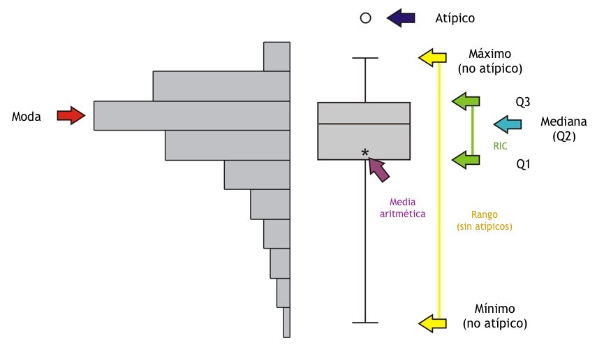
{kind=link}
En ggplot2, los diagramas de caja se implementan con la función geom_boxplot().
El siguiente bloque de código muestra un diagrama de caja de la esperanza de vida por continente, con los continentes ordenados por mediana ascendente.
# Diagrama de caja de esperanza de vida por continente
diagrama_caja_ggplot2 <-
paises |>
ggplot(aes(x = reorder(CONTINENT, LIFE_EXPECTANCY, median, na.rm = TRUE),
y = LIFE_EXPECTANCY)) +
geom_boxplot() +
ggtitle("Esperanza de vida por continente") +
xlab("Continente") +
ylab("Esperanza de vida (años)") +
labs(caption = "Fuentes: Natural Earth y Banco Mundial") +
theme_minimal()
# Diagrama de caja plotly
ggplotly(diagrama_caja_ggplot2) |>
config(locale = 'es')Al convertir el gráfico con ggplotly(), el tooltip muestra automáticamente los cinco estadísticos al pasar el ratón sobre cada caja y los valores individuales de los puntos atípicos.
10.8 Recursos de interés
DT: An R interface to the DataTables library. (s. f.). https://rstudio.github.io/DT/
Healy, K. (2018). Data Visualization: A Practical Introduction. Princeton University Press. https://socviz.co/
Holtz, Y. (s. f.). From data to Viz - Find the graphic you need. https://www.data-to-viz.com/
Holtz, Y. (s. f.). The R Graph Gallery - Help and inspiration for R charts. https://r-graph-gallery.com/
Sievert, C. (2020). Interactive Web-Based Data Visualization with R, plotly, and shiny. Chapman and Hall/CRC. https://plotly-r.com/
Wickham, H. (2010). A Layered Grammar of Graphics. Journal of Computational and Graphical Statistics, 19(1), 3-28. https://doi.org/10.1198/jcgs.2009.07098
Wickham, H. (s. f.). ggplot2: Create Elegant Data Visualisations Using the Grammar of Graphics. https://ggplot2.tidyverse.org/
Wickham, H., Çetinkaya-Rundel, M., & Grolemund, G. (2023). R for Data Science (2.ª ed.). O’Reilly Media. https://r4ds.hadley.nz/